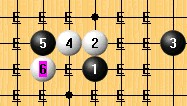

大残月第三题
首页
妖刀天下
#1 大残月第三题 作者：失落刀 发表时间：2008-11-5 20:42:27

求白胜。
#2 Re:大残月第三题 作者：笑雨辰 发表时间：2008-11-5 22:50:19
这个5手是2打吧
也白必了？
#3 Re:大残月第三题 作者：袜子破个洞 发表时间：2008-11-6 4:29:17
应该差不多。这个变化以前研究了好久。经历过很多结论的转变。现在感觉应该是白差不多可以胜了。
#4 Re:大残月第三题 作者：失落刀 发表时间：2008-11-6 10:49:19
袜子指点了下，感谢头绪了，不过还是非常难。
#5 Re:大残月第三题 作者：wrwak 发表时间：2008-11-7 19:08:42
白棋要必胜很遥远啊
#6 Re:大残月第三题 作者：wrwak 发表时间：2008-11-7 19:09:16
题目本身就有问题 我说不是白胜
#7 Re:大残月第三题 作者：失落刀 发表时间：2008-11-7 21:25:19

两个强7.
#8 Re:大残月第三题 作者：袜子破个洞 发表时间：2008-11-7 22:38:10
呵呵。个人所 见也许未必是对。你我都一样。我只想审判棋谱。不想被棋谱审判.
#9 Re:大残月第三题 作者：刀魂 发表时间：2009-3-15 2:21:09
=======上图对应的爱五子棋谱代码如下，以便你拆解：========
h8h9k9g9f9g10g8e10i8j8f10f11e12g12h13g11g13h11i11
======================================================棋谱如下：
#10 Re:大残月第三题 作者：wrwak 发表时间：2009-3-22 21:25:25
楼上的是什么东西？？
#11 Re:大残月第三题 作者：安娜制作所 发表时间：2009-6-19 10:44:01
９楼刀魂，如果我这样走呢？
=======上图对应的爱五子棋谱代码如下，以便你拆解：========
h8h9k9g9f9g10g8e10i8j8f10f11i9
======================================================
#12 Re:大残月第三题 作者：安娜制作所 发表时间：2009-6-19 10:50:20
七楼强七，这样走怎么样呀？
=======上图对应的爱五子棋谱代码如下，以便你拆解：========
h8h9k9g9f9f8h10e6
======================================================